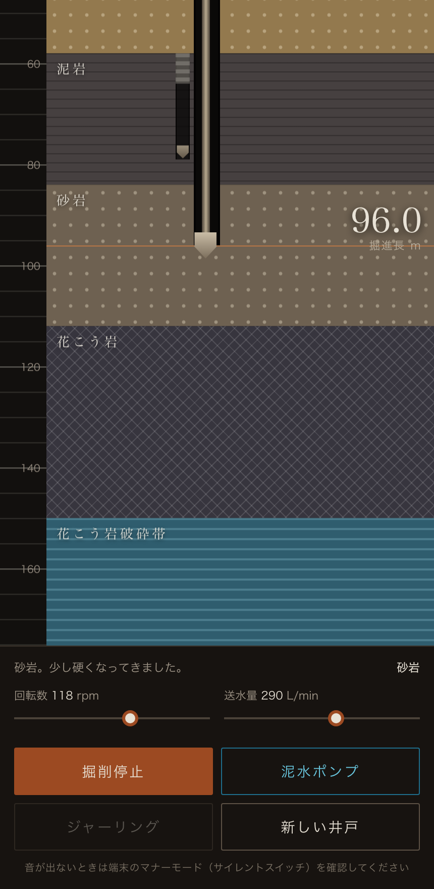
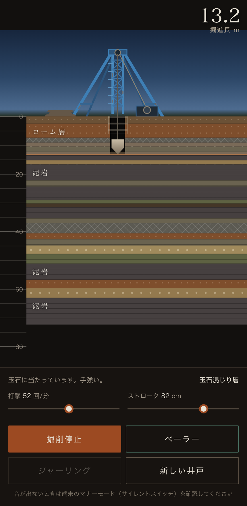

井戸を掘ると、地層が音楽になる。
音が出ます。ブラウザだけで動き、音源ファイルは使っていません。
掘り方を選んでください。同じ地面でも、工法が変われば鳴る音が変わります。

ビットを回して削る。泥水を循環させて孔壁を保ちながら、岩盤の奥の破砕帯まで掘り下げます。回転が速いほど曲も速くなります。

綱で吊った工具を落として砕く、昔ながらの綱掘り。掘りカスが溜まったらベーラーでさらいます。その引き上げと投入の間が、そのまま間奏になります。